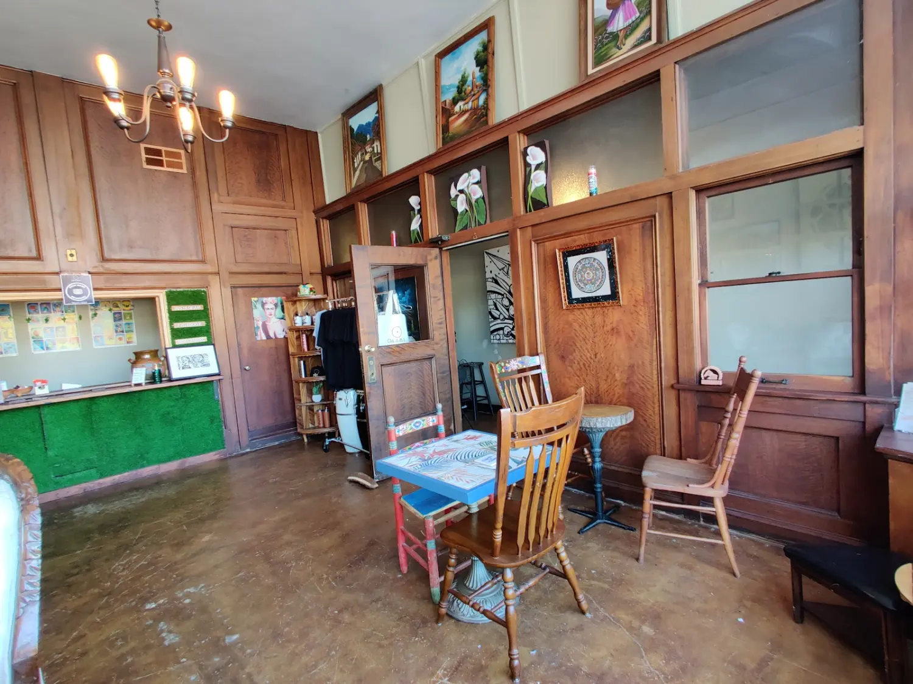
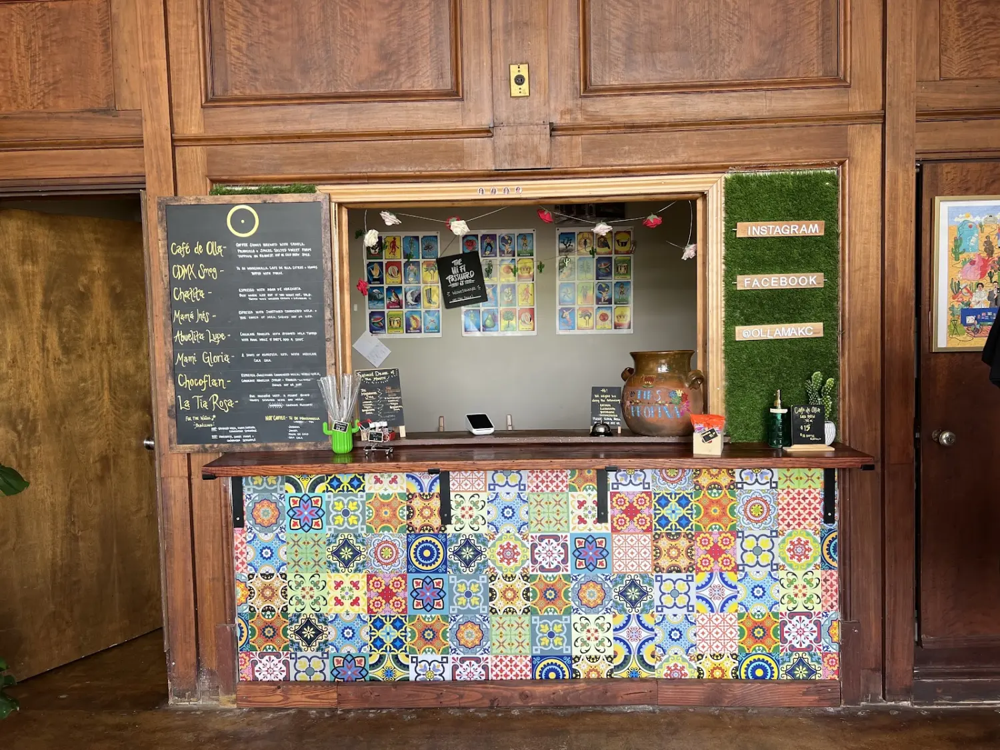
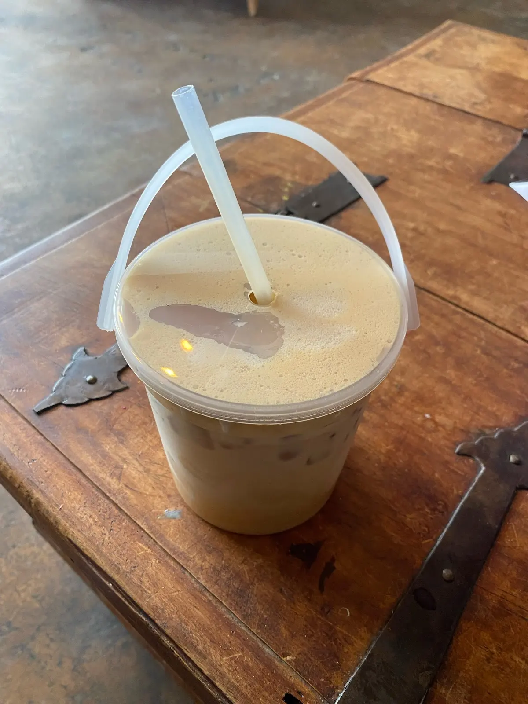
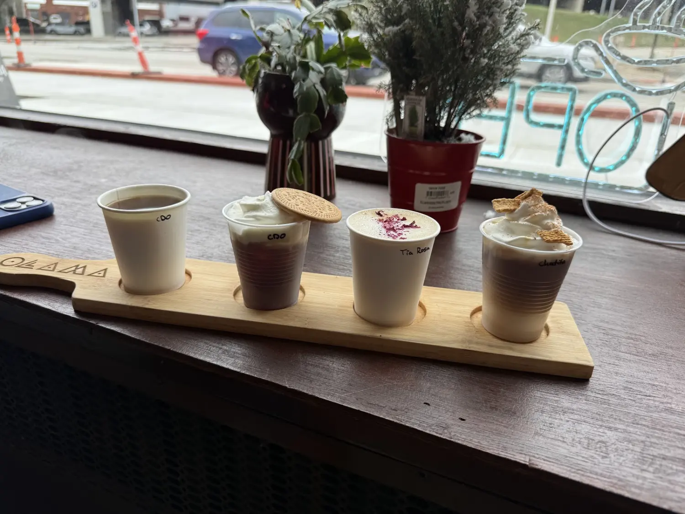
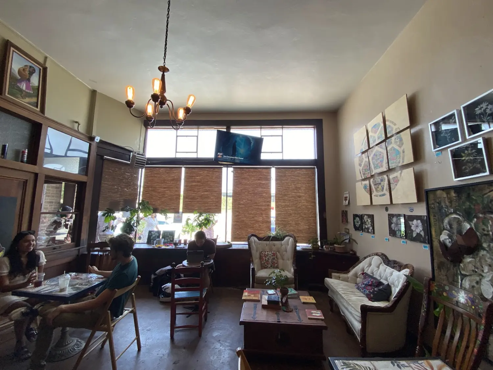
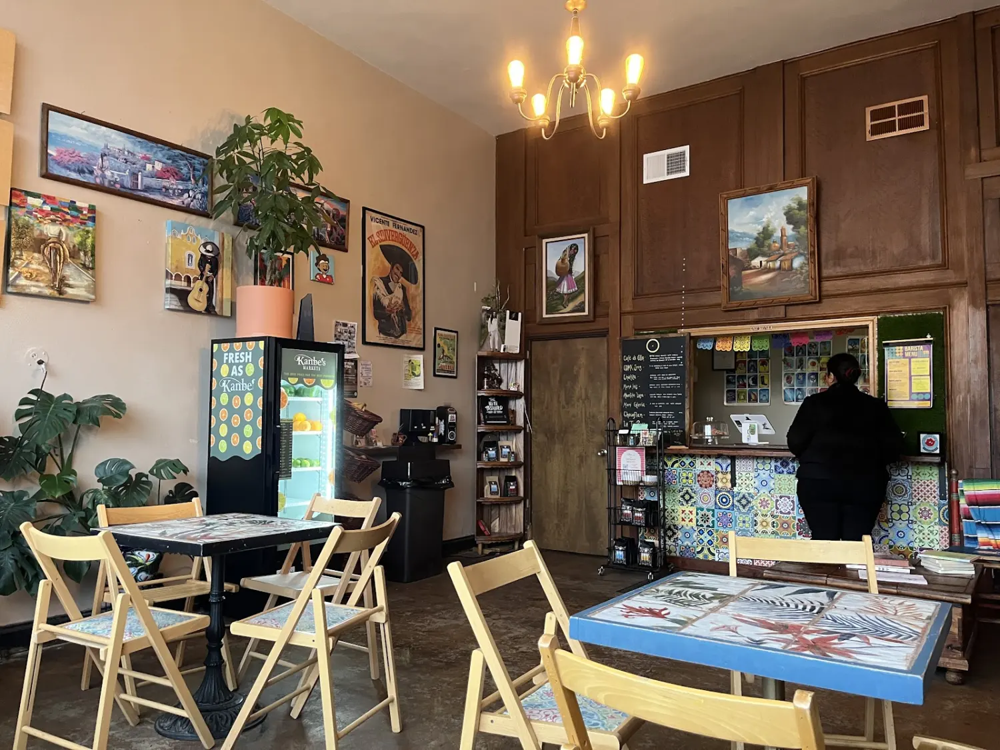
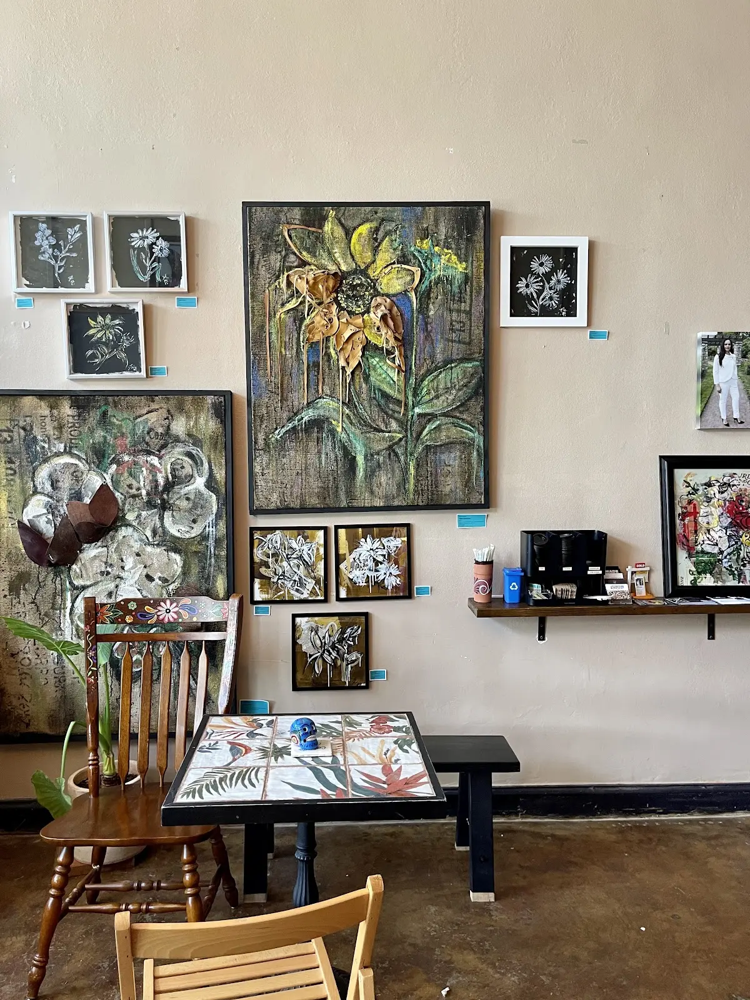
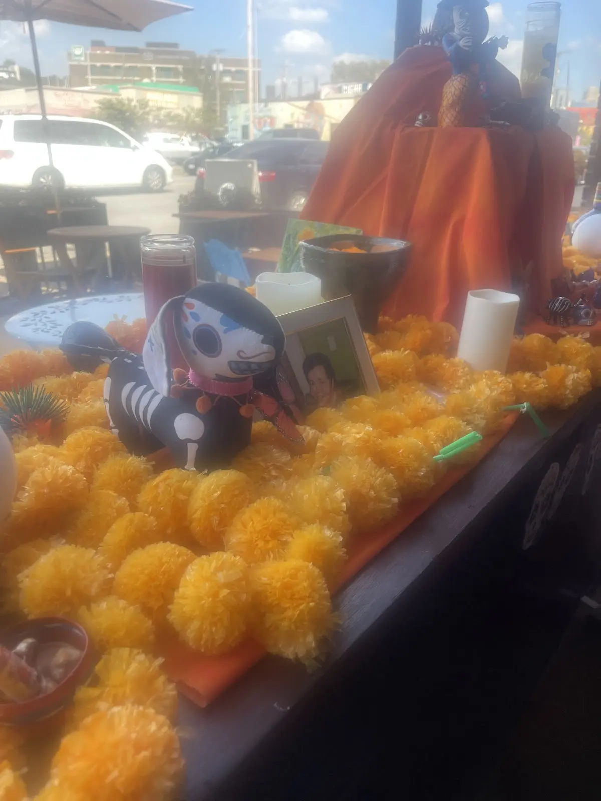

Espresso, the long wayLattes · Cortados · Flat white
Single-origin shots pulled to order and married with milk we steam to a fine, glossy texture. The cortado is our quiet favorite — balanced, unhurried, exactly enough.

Riverside, Washington · Est. on Main Street
A neighborhood third-wave café where the coffee is roasted close to home, the pastries arrive each morning, and the staff already know how you take it.
The Room
Some cafés want you in and out. Ours was never built that way. The ceilings are high, the wood is old, and the walls carry rotating work from artists down the street. Light moves across the room over the course of a morning, and most people stay for it.
Order a cortado and a still-warm pastry. Take the table by the window, or the worn leather seat in the corner. There is no soundtrack engineered to move you along — just the hiss of the machine, a low hum of conversation, and time that feels, for once, like it belongs to you.
— Pull a chair up. Stay a while.

The Bar
We keep the list small on purpose, so we can keep it honest. Locally roasted beans, dialed in daily.


From the regulars
“The kind of place where they start your order the second you walk in. The cold brew is the best in town and the room makes you want to stay all morning.”
Paraphrased from a Google review · ~4.8★ average




Find us
Right on Main in Riverside — easy to find, easier to stay. Call ahead for a big order, or just walk in. We open early and the first pour is always the best one.